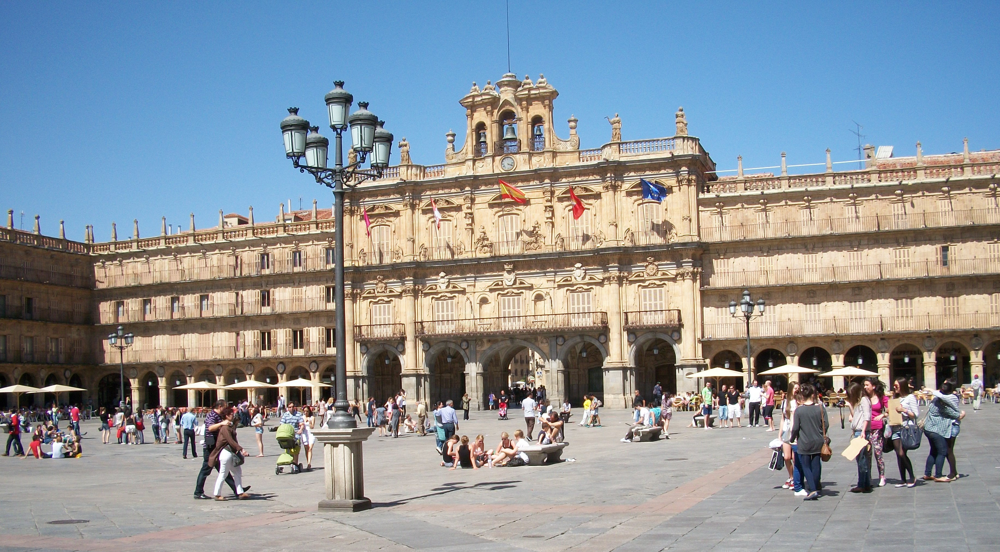
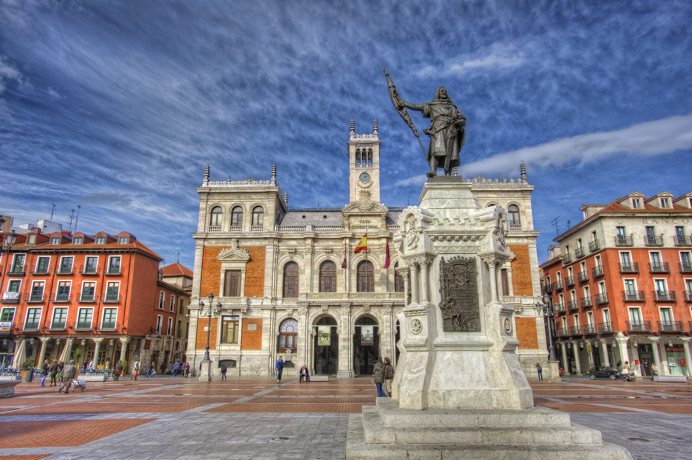
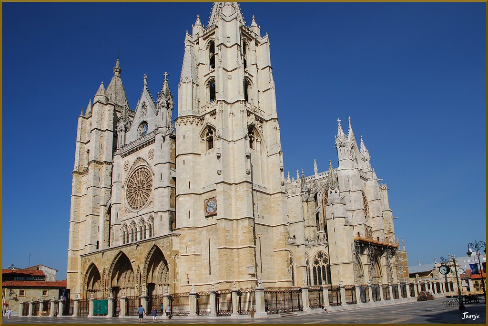
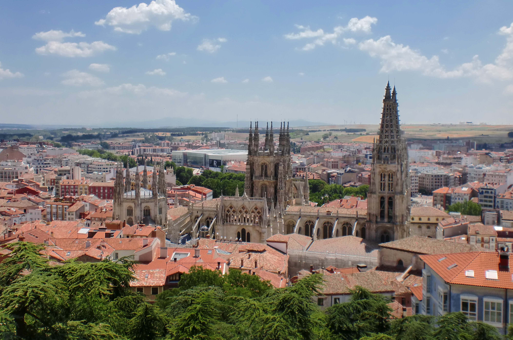
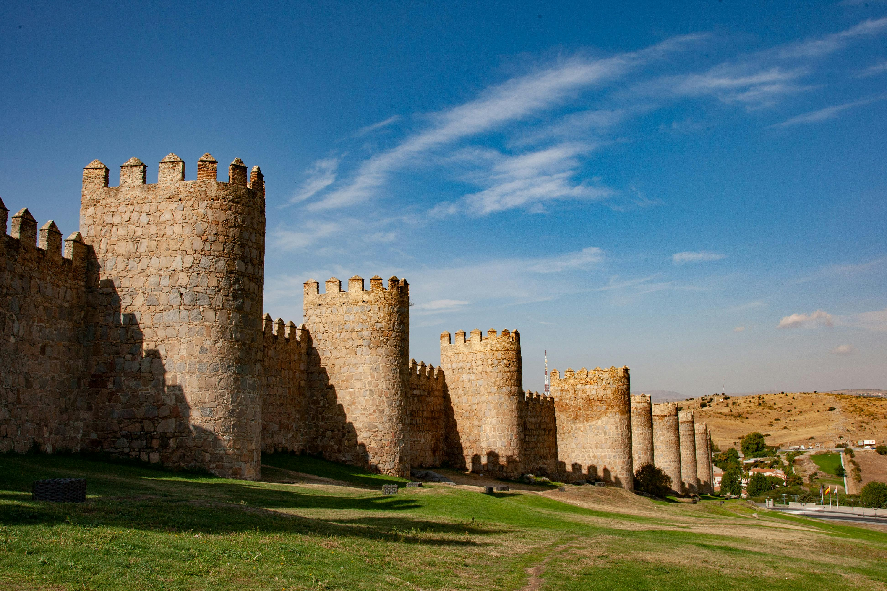
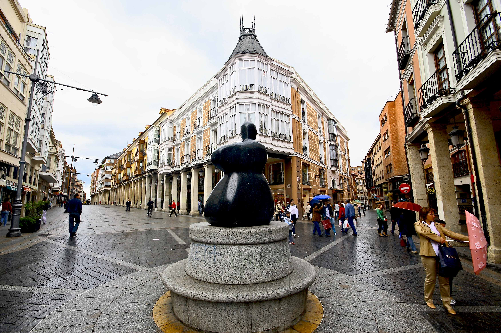
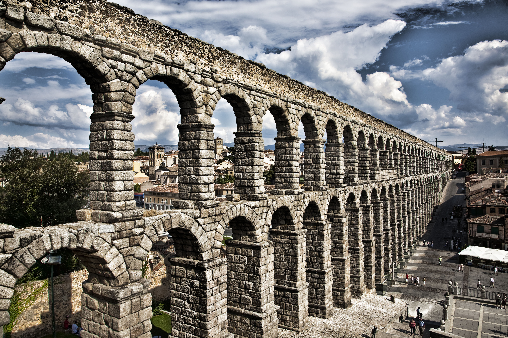
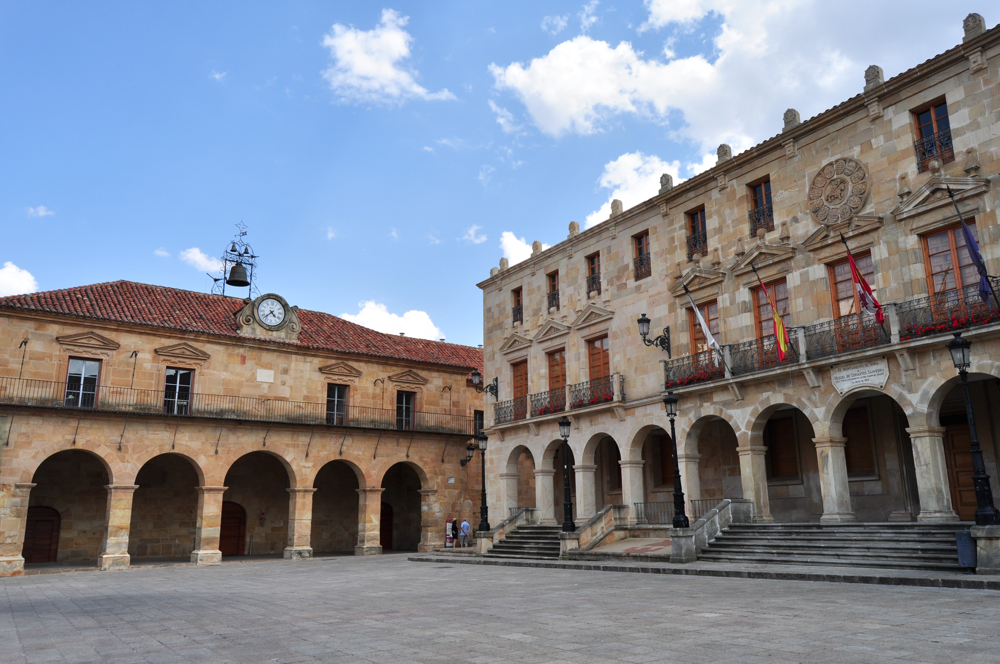
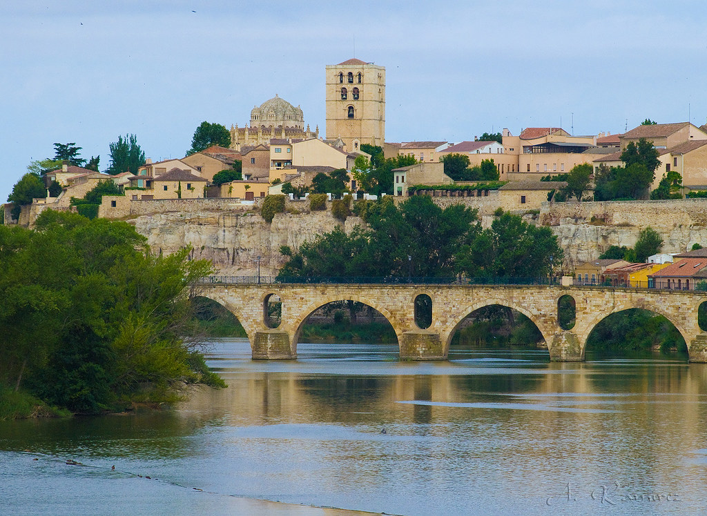

Salamanca
Nuestra comparativa estrella: bus urbano, SALEnBici y taxis

Nuestra comparativa estrella: bus urbano, SALEnBici y taxis

VTC, Autobuses Auvasa y Patinetes

Alternativas de movilidad en el centro

Transporte metropolitano y movilidad sostenible

Transporte intramuros y parkings disuasorios

Red de carril bici y autobuses urbanos

Movilidad turística, bus urbano y taxis

Conexiones peatonales y transporte público

Zonas peatonales y movilidad eficiente
Encontrar el mejor método de transporte urbano en Castilla y León puede ser complicado debido a las diferentes normativas de cada ayuntamiento. En ciudades como Salamanca, el enfoque recae en el transporte público tradicional y el alquiler de bicicletas compartidas, mientras que en Valladolid existen opciones adicionales como los servicios VTC (Uber, Cabify). Nuestro portal analiza los precios de abonos mensuales, tarifas por minuto de patinetes eléctricos y disponibilidad de parkings para ayudarte a ahorrar tiempo y dinero en tus trayectos diarios.

¿Qué abono compensa más en Salamanca?

Restricciones de vehículos por ciudad

Comparativa general de precios